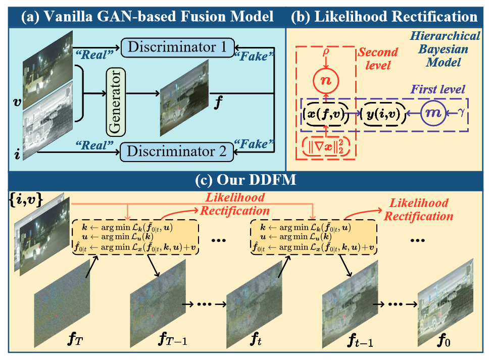
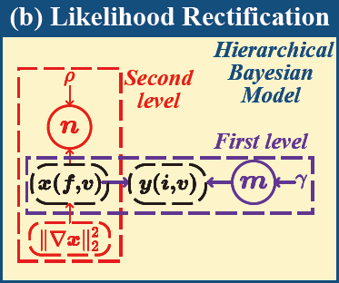
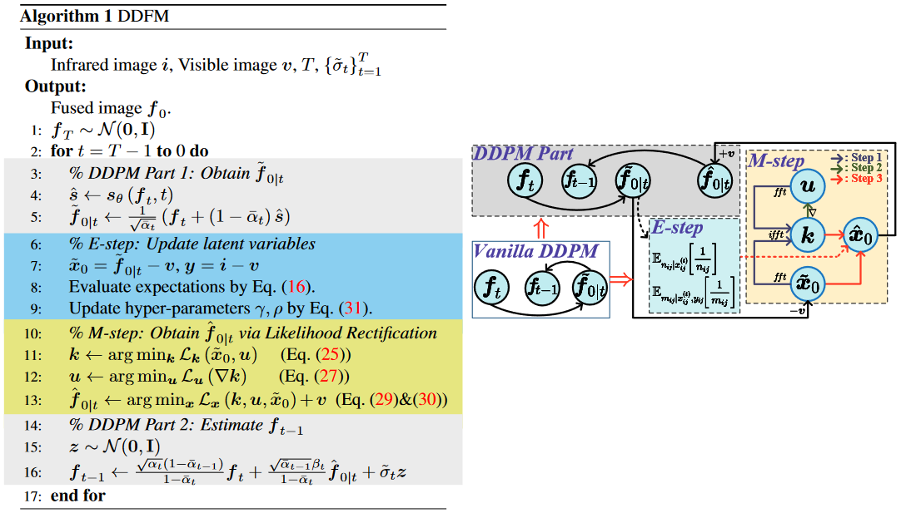
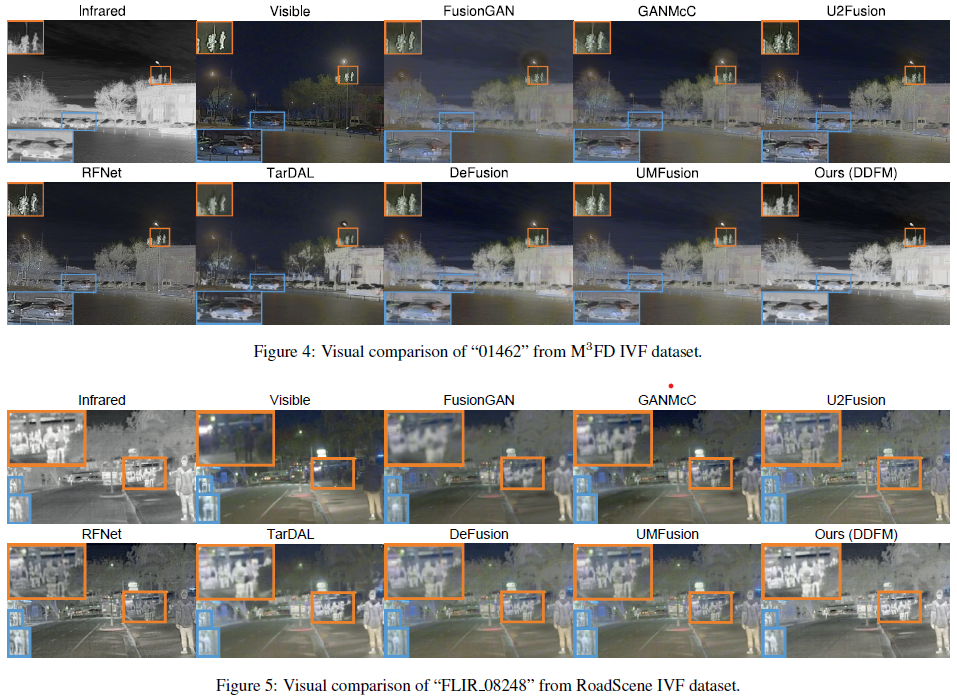
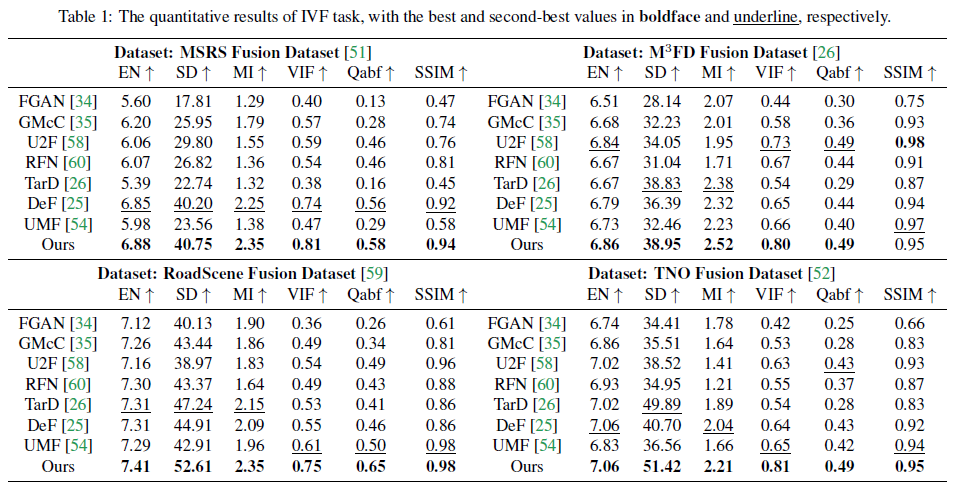
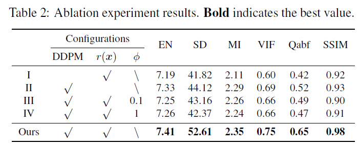
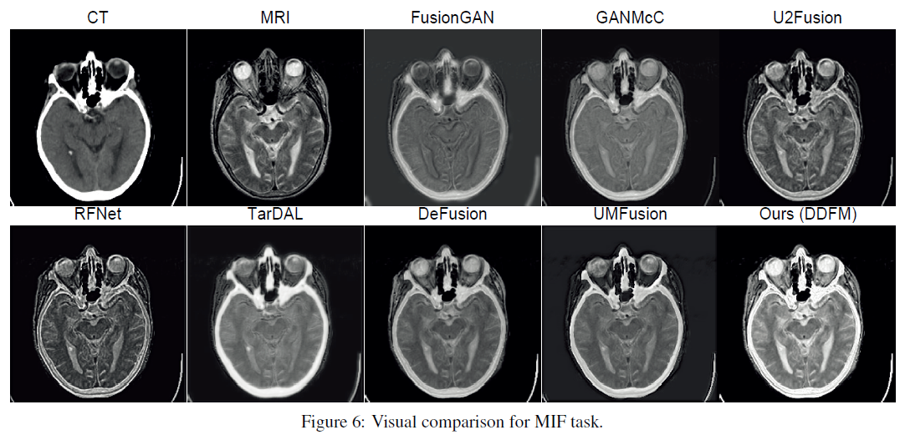
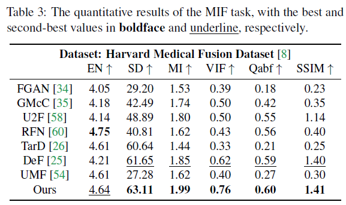

DDFM: Denoising Diffusion Model for Multi-Modality Image Fusion
Abstract
- Claim: Use DDPM for Multi-Modality Image Fusion
- Image fusion \(\to\) conditional generation, divided into 2 subproblems
- Unconditional generation problem
- Maximum likelihood problem
- modeled in a hierarchical Bayesian manner with latent variables
- inferred by the expectation-maximization (EM) algorithm
- Training-free: all we required is an unconditional pre-trained generative model, and no fine-tuning is needed
Baseline

Get Subproblems
Problem
The author lists Infrared-Visible image Fusion (IVF) and Medical Image Fusion (MIF) as application scenarios for this image fusion. Take IVF as an example:
- \(\boldsymbol{i}\): infrared image
- \(\boldsymbol{v}\): visible image
- \(\boldsymbol{f}\): fused image
The target is to fuse \(\boldsymbol{i}\) and \(\boldsymbol{v}\) to get \(\boldsymbol{f}\) with high quality.
Recall the reverse SDE of diffusion process:
and the score function, i.e., \(\nabla_{\boldsymbol{f}_t} \log p_t\left(\boldsymbol{f}_t \mid \boldsymbol{i}, \boldsymbol{v}\right)\), can be calculated by:
- Equality uses Bayes theorem
- Approximate equality is proved in Diffusion Posterior Sampling for General Noisy Inverse Problems
\(\nabla_{\boldsymbol{f}_t} \log p_t\left(\boldsymbol{f}_t\right)\) represents the score function of unconditional diffusion sampling, which can be readily derived by the pre-trained DDPM. In the next section, we explicate the methodology for obtaining
Likelihood Rectification
Use \(\boldsymbol{f}\) as an abbr. for \(\tilde{\boldsymbol{f}}_{0 \mid t}\)
Commonly-used loss function for the image fusion task:
Use \(\boldsymbol{x} = \boldsymbol{f} - \boldsymbol{v}\) and \(\boldsymbol{y} = \boldsymbol{i} - \boldsymbol{v}\)
Optimization Form of Regression
Corresponding to the regression model: \(\boldsymbol{y} = \boldsymbol{k}\boldsymbol{x} + \boldsymbol{\varepsilon}\), with \(\boldsymbol{k}\) fixed to \(\boldsymbol{1}\).
The author says, "Accoding to the relationship between regularization term and noise prior distribution", \(\boldsymbol{\varepsilon}\) and \(\boldsymbol{x}\) are governed by Laplacian distribution (\(\mathcal{LAP}\)).
Remark
The author wants to transform \(\ell_1\)-norm optimization into an \(\ell_2\)-norm optimization with latent variables, avoiding potential non-differentiable points in \(\ell_1\)-norm.
Proposition 1
For a random variable \((R V) \xi\) which obeys a Laplace distribution, it can be regarded as the coupling of a normally distributed \(R V\) and an exponentially distributed \(R V\), which in formula:
Therefore, \(p(\boldsymbol{x})\) and \(p(\boldsymbol{y} \mid \boldsymbol{x})\) can be rewritten as the following hierarchical Bayesian framework: where \(i=1, \ldots, H\) and \(j=1, \ldots, W\).
Through the above probabilistic analysis, the original optimization problem can be transformed into a maximum likelihood inference problem.

Ultimately, the log-likelihood function of the probabilistic inference issue is:
Total variation penalty item \(r(\boldsymbol{x})=\|\nabla \boldsymbol{x}\|_2^2\) is added to make the fusion image \(f\) better preserve the texture information from \(v\), where \(\nabla\) denotes the gradient operator.
Inference via EM Algorithm
An Overview of EM Algorithm
E-step: calculates the conditional expectation of log-likelihood function
M-step: optimizes \(\mathcal{Q}\)-function
E-step
Proposition 2
The conditional expectation of the latent variable \(1 / m_{i j}\) and \(1 / n_{i j}\) are:
Finally we have
\(\odot\) is the elementwise multiplication. \(\boldsymbol{m}\) and \(\boldsymbol{n}\) are matrices with each element being \(\sqrt{\pi_{i j}}\) and \(\sqrt{n_{i j}}\), respectively.
M-step
Here, we need to minimize the negative \(Q\)-function with respect to \(\boldsymbol{x}\). The half-quadratic splitting algorithm is employed to deal with this problem, i.e.,
It can be further cast into the following unconstraint optimization problem,
The unknown variables \(\boldsymbol{k}, \boldsymbol{u}, \boldsymbol{x}\) can be solved iteratively in the coordinate descent fashion.
Details about updates of \(\boldsymbol{k}\) and \(\boldsymbol{u}\)
Update \(\boldsymbol{k}\) : It is a deconvolution issue,
It can be efficiently solved by the fast Fourier transform (fft) and inverse fft (ifft) operators, and the solution of \(k\) is
\(\bar{\cdot}\) is the complex conjugation.
Update \(\boldsymbol{u}\) : It is an \(\ell_2\)-norm penalized regression issue,
The solution of \(\boldsymbol{u}\) is
Update \(\boldsymbol{x}\) : It is a least squares issue,
The solution of \(\boldsymbol{x}\) is
\(\oslash\) denotes the element-wise division,
Final estimation of \(\boldsymbol{f}\) is
Additionally, hyper-parameter \(\gamma\) and \(\rho\) can be also updated after the sampling from \(\boldsymbol{x}\) by
DDFM Algorithm

Experiment on IVF Task

Metrics
- EN: entropy
\(L\) denotes the number of gray levels, \(p_l\) is the normalized histogram of the corresponding gray level in the fused image.
- SD: standard deviation
\(\mu\) denotes the mean value of the fused image.
- MI: mutual information
\(p_X(x)\) and \(p_F(f)\) denote the marginal histograms of source image \(X\) and fused image \(F\), respectively. \(p_{X, F}(x, f)\) denotes the joint histogram of source image \(X\) and fused image \(F\)
- VIF: visual information fidelity
- \(Q^{AB/F}\)
\(Q^{X F}(i, j)=Q_g^{X F}(i, j) Q_a^{X F}(i, j), Q_g^{X F}(i, j)\) and \(Q_a^{X F}(i, j)\) denote the edge strength and orientation values at location \((i, j)\), respectively. \(w^X\) denotes the weight that expresses the importance of each source image to the fused image.
A large \(Q^{A B / F}\) means that considerable edge information is transferred to the fused image.
- SSIM: structural similarity index measure
Details in Infrared and visible image fusion methods and applications: A survey.

Ablation Experiment

Experiment on MIF Task

